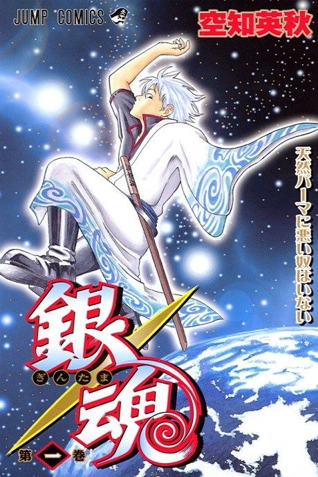
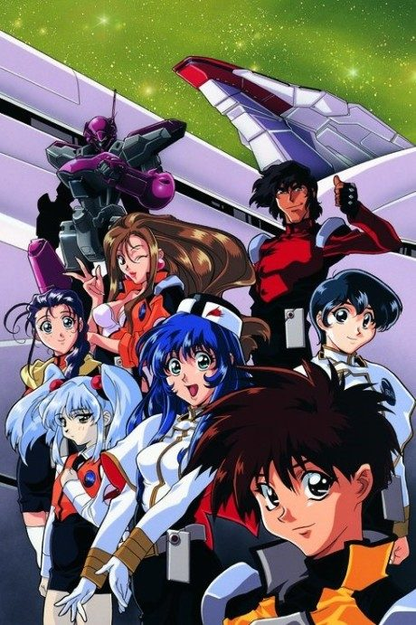

Gintama
銀魂
In an Edo-period Japan taken over by aliens, the lazy ex-samurai Gintoki runs an odd-jobs business with two friends.
The anime covers the whole manga.
8.5AniList score
—Animeter, no votes yet
367episodes, 8 seasons
Rate it or report where you stopped
Key events
These are spoilers. They stay blurred until you reveal them, one at a time or all at once.
Benizakura Arc Ep 58–61
- Katsura is reported cut down by a mysterious swordsman, and Elizabeth hires the Yorozuya to find him.
- The Benizakura, a blade that fuses with its wielder, is revealed as the weapon of Takasugi's ally Nizo Okada.
- Gintoki duels the Benizakura-possessed Nizo aboard Takasugi's ship.
- Takasugi declares he will destroy the world, putting him openly at odds with Gintoki and Katsura.
Yagyu Arc Ep 76–81
- Kyubei Yagyu arrives to claim Otae, citing a childhood promise.
- The Yorozuya and the Shinsengumi storm the Yagyu estate in a plate-breaking team battle.
- Kyubei's tangled upbringing as the clan heir is laid bare and the engagement is called off.
Okita Mitsuba Arc Ep 86–87
- Gintoki befriends the sickly Mitsuba Okita.
- Her fiance turns out to be an arms dealer supplying the Joui rebels, and Hijikata cuts him down.
- Mitsuba dies of her illness, revealing her quiet past with Hijikata.
Shinsengumi Crisis Arc Ep 101–105
- Hijikata is expelled from the Shinsengumi after the cursed blade ruins his character.
- Advisor Kamotaro Ito launches a coup and allies with the Kiheitai to assassinate Kondo.
- Gintoki and Hijikata race on a train to save Kondo, and Ito is mortally wounded.
- Hijikata gives Ito a final duel and recognizes him as a comrade before he dies.
Ryugujo Arc Ep 115–118
- The gang is carried to the Ryugujo, a sea palace run by an Otohime who hoards youth.
- Otohime's box ages the entire city of Edo into old people.
- The aged heroes fight back and reverse the effect.
Yoshiwara in Flames Arc Ep 139–146
- Seita asks Gintoki to help him meet Hinowa, the courtesan he believes is his mother.
- Gintoki fights the Hyakka leader Tsukuyo and then the Yato king Housen.
- Kagura's brother Kamui appears as captain of the Harusame 7th Division.
- Housen is defeated and Yoshiwara is opened to the sunlight again.
Tama Quest Arc Ep 167–170
- The group enters Tama's internal world as RPG-style characters.
- They fight the virus and a corrupted version of Tama's programming.
- Tama is saved and her sense of self grows stronger.
Red Spider Arc Ep 177–181
- Jiraia, Tsukuyo's former teacher, attacks Yoshiwara with his Spider assassins.
- Gintoki faces Jiraia's web traps and poisoned blades.
- Tsukuyo confronts her mentor and ends his obsession.
Kabukicho Stray Cat Arc Ep 190–192
- Gintoki and several companions wake up as cats.
- They must get back to their human bodies before it is too late.
Kabukicho Four Devas Arc Ep 210–215
- Otose's old comrade Jirocho returns to Kabukicho and the Four Devas' truce collapses.
- Otose is caught in the middle of the turf war and the Yorozuya side with her.
- Jirocho's daughter Pirako turns out to be pulling the strings.
- Gintoki defeats Jirocho and the district's balance is restored.
Jugem Arc Ep 221–222
- Gintoki gives the child a ridiculously long name from rakugo.
- The name becomes a running gag in later episodes.
Love Choriss Arc Ep 228–229
- The men's virtual girlfriends start to dominate their lives.
- Their dates in the real world end in disaster.
Thorny Arc Ep 244–247
- Isaburo Sasaki and Nobume Imai of the elite Mimawarigumi make their debut.
- Gintoki and Hijikata are reluctantly forced to team up during the investigation.
- The Mimawarigumi's polite rivalry with the Shinsengumi is established.
Kintama Arc Ep 253–256
- Kintoki takes Gintoki's place in everyone's memories.
- The forgotten Gintoki has to win his friends back alone.
- Shinpachi and Kagura recover their memories and stand with him.
Courtesan of a Nation Arc Ep 257–261
- Suzuran, a legendary courtesan, has waited years to see the man she once promised to meet.
- The former shogun Sada Sada is exposed as the cruel force behind her story.
- Gintoki, Tsukuyo and allies storm Sada Sada's castle so Suzuran can keep her promise.
- Suzuran gets her reunion in her final moments.
Shinigami Arc Ep 279–281
- Nobume's past as an assassin of the Naraku comes to light.
- Gintoki fights alongside Nobume against Naraku killers.
- Hints of Gintoki's own link to the Naraku begin to surface.
Soul Switch Arc Ep 287–289
- Gintoki and Hijikata have to live each other's lives.
- The chaos spreads as others get swapped too.
Kaientai Arc Ep 290–291
- Sakamoto returns with the Kaientai trading company.
- Mutsu's Yato background and family ties are revealed.
Shogun Assassination Arc Ep 300–307
- The Iga ninja and Takasugi's Kiheitai close in on Shogun Shige Shige.
- Gintoki and Takasugi clash in a duel years in the making.
- Gintoki's tragic past with his teacher Shoyo and the Naraku's Oboro is revealed.
- Shige Shige survives the battle but is poisoned, opening the way for his rival Nobunobu.
Farewell, Shinsengumi Arc Ep 308–316
- Kondo and Matsudaira are arrested and the Shinsengumi is dissolved.
- The Yorozuya and the Shinsengumi strike at the prison island to free Kondo.
- Isaburo Sasaki turns on the Naraku and dies protecting others.
- The Shinsengumi leave Edo as outlaws.
Rakuyou Decisive Battle Arc Ep 317–328
- Kagura and Kamui's father Umibozu returns and the family's tragic past with their mother Kouka is shown.
- Kamui and Takasugi fight the Harusame and Tendoshu forces on Rakuyo.
- Utsuro is revealed as the immortal being who shared a body with Shoyo, Gintoki's teacher.
- Kagura's family is torn apart and partly reconciled amid the battle.
Porori Arc (gag interlude) Ep 329–341
- Kagura brings home a 'boyfriend', sending Umibozu and Gintoki into a panic.
- A homeless saga drags the cast through life on the streets.
- The HDZ48 popularity contest pits the female cast against each other.
Silver Soul Arc Ep 342–361
- An alien Liberation Army invades Edo at Utsuro's urging.
- Gintoki, Katsura and Takasugi fight side by side for the first time since the Joui war.
- Edo's factions, from the Shinsengumi to the Kabukicho underworld, hold the city against the invaders.
- Utsuro's plan to blow up Earth's Altana is foiled.
Silver Soul Aftermath Ep 362–369
- A two-year time skip shows Edo rebuilt and the Yorozuya scattered.
- Gintoki returns to Edo as a remnant of Utsuro's power stirs.
- The Semi-Final web specials bridge to the last film.
Gintama: The Final Film
- Gintoki fights the last remnant of Utsuro, which has taken over Takasugi.
- Takasugi dies after the battle, at peace with Gintoki.
- The Yorozuya reunite and return to everyday life.
More like Gintama
 Manga Ch. 11518.7
Manga Ch. 11518.7
 Manga Ch. 2707.9
Manga Ch. 2707.9
 Done7.9
Done7.9
 Unclear7.5
Unclear7.5
 Done7.2
Done7.2
 Done8.3
Done8.3
 Manga Ch. 1797.2
Manga Ch. 1797.2
 Manga Ch. 3747.2
Manga Ch. 3747.2
 Manga Ch. 3268.3
Manga Ch. 3268.3
 Manga Mission 888.3
Manga Mission 888.3
 Original8.4
Original8.4

Original7.3